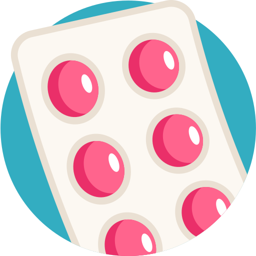
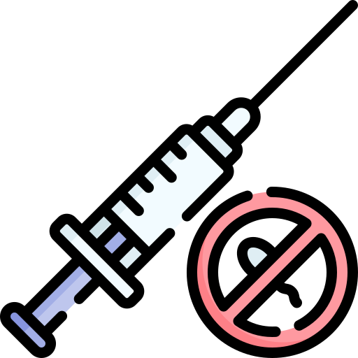
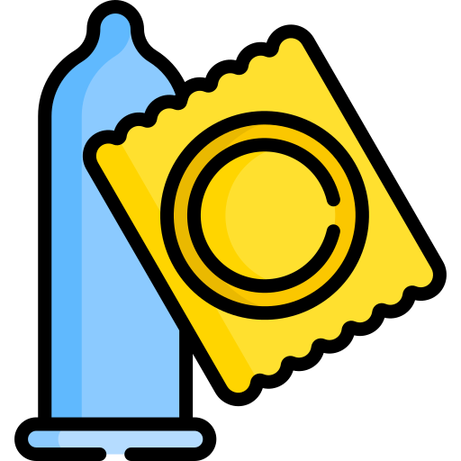

Métodos Contraceptivos



O QUE SÃO?
- Contraceptivos são dispositivos, medicamentos ou métodos que visam evitar a gravidez ao impedir a
fertilização do óvulo ou a implantação do embrião no útero. Existem vários tipos de contraceptivos
disponíveis, e eles podem ser divididos em duas categorias principais: contraceptivos de barreira e
contraceptivos hormonais.
- Contraceptivos de barreira incluem preservativos masculinos e femininos, diafragmas e esponjas. Eles
funcionam criando uma barreira física entre os espermatozoides e o óvulo, impedindo que ocorra a
fertilização. Esses métodos são eficazes, de fácil acesso e fornecem proteção contra infecções.
- Contraceptivos hormonais consistem em pílulas anticoncepcionais, adesivos, injeções, implantes,
dispositivos intrauterinos (DIUs) e anéis vaginais. Eles alteram os níveis hormonais no corpo para
impedir a ovulação e tornar o muco cervical mais espesso, dificultando a passagem dos espermatozoides.
PARA EMERGÊNCIA!
- A pílula do dia seguinte (ou contraceptivo de emergência) contém uma alta dose de hormônios que pode atrasar a ovulação, dificultar a fertilização ou impedir a implantação de um óvulo fertilizado. Ela deve ser usada após relações sexuais não protegidas ou falha do método contraceptivo regular.
- A eficácia da pílula do dia seguinte é maior quando usada o mais rápido possível após a relação sexual não protegida. No entanto, seu poder contraceptivo diminui à medida que o tempo passa. Ela é mais eficaz nas primeiras 24 horas e continua a ser útil até 72 horas após o ato sexual, mas sua eficácia diminui com o tempo.
- Em muitos países, a pílula do dia seguinte está disponível sem receita médica em farmácias. Isso facilita o acesso imediato em caso de emergência. No entanto, é aconselhável obter orientação médica sempre que possível. Além disso, não use ela regularmente pois pode causar endometriose e outros.
ONDE ENCONTRAR?
- Contraceptivos estão amplamente disponíveis em clínicas de saúde, consultórios médicos, farmácias, centros de planejamento familiar e, em alguns casos, gratuitamente em clínicas de saúde pública ou programas de prevenção. Muitos deles podem ser comprados sem receita médica.
- É essencial que os jovens busquem orientação médica ou aconselhamento em centros de saúde para escolher o método contraceptivo mais adequado às suas necessidades e objetivos. Além disso, o uso correto e consistente dos contraceptivos é fundamental para garantir sua eficácia.
- Em resumo, os contraceptivos desempenham um papel importante na vida dos jovens, ajudando-os a tomar decisões responsáveis sobre sua saúde sexual e reprodutiva. Ao entender o que são, para que servem e onde encontrá-los, os jovens podem tomar decisões informadas e garantir uma vida sexual saudável e segura.